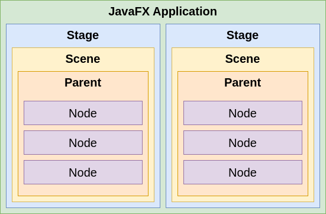

Interfacce utente grafiche (GUI) con JavaFX
Programmazione ad Oggetti
C.D.L. Ingegneria e Scienze Informatiche
Danilo Pianini — danilo.pianini@unibo.it
Roberto Casadei — roby.casadei@unibo.it
Introduzione a JavaFX
JavaFX
-
Libreria Java per la creazione di GUI per Rich Applications multi-piattaforma
- Disponibile dal 2008 (v. 1.0 – 2.2) come libreria stand-alone
- Presente “stabilmente” nel JDK da Java 8 (v. JavaFX 8)
Introdotto ufficialmente in Java con l’idea di sostituire (gradualmente) Swing- Torna ad essere una libreria stand-alone da Java 11: è opensource e parte del progetto OpenJDK – https://openjfx.io
- Consente la creazione di GUI moderne, di qualità e ben adattabili a qualunque piattaforma e supporto hardware
JavaFX: funzionalità principali
Java APIs
- Libreria che include classi e interfacce scritte in Java
- Nel 2022, la versione più recente, JavaFX 19, richiede JDK >= 11
FXML (e CSS per lo stile)
- FXML è un linguaggio dichiarativo per definire la GUI di un’applicazione JavaFX-based
- CSS è un linguaggio flessibile per specificare lo stile di elementi della GUI
- Il loro impiego non è indispensabile, ma fortemente consigliato per una buona separazione dei concern
MVC-friendly
- Attraverso FXML/CSS, ma anche attraverso proprietà osservabili e data binding
Graphics API
- Supporto nativo per la grafica 3D (geometrie, camere, luci)
- Abilita la possibilità di disegnare direttamente sulla superficie (canvas) dell’applicazione
Supporto per schermi Multi-touch e Hi-DPI
- Fornisce il supporto per funzionalità multi-touch (cf.
SwipeEvent), in funzione della piattaforma in cui l’applicazione è in esecuzione - Garantisce una buona visualizzazione della GUI anche su schermi ad alta densità di pixel
Interoperabilità bidirezionale con la libreria Java built-in per GUI Swing
- GUI Swing esistenti possono includere componenti JavaFX (cf.
JFXPanel) - E’ possibile inserire componenti Swing in interfacce JavaFX (cf.
SwingNode)
Astrazioni fondamentali
Stage
- Il contenitore (esterno) dove la GUI sarà visualizzata (ad es., una finestra del S.O.)
- Corrisponde al
JFramedi Swing
- Corrisponde al
- javafx.stage.Stage, sottoclasse di
Window
Scene
- Una scene rappresenta un contenuto (una pagina della GUI) visualizzabile sullo
Stage- ogni
Stagepuò mostrare una solaScenealla volta: si imposta viaStage#setScene(Scene)
- ogni
- javafx.scene.Scene contiene il cosiddetto scene graph, impostabile attraverso
Scene#setRoot(Parent)
Application
- Un’applicazione JavaFX si definisce estendendo javafx.application.Application
- Consente di definire metodi hook sul ciclo di vita dell’applicazione (
init,start,stop, …) - Tipicamente, si opera ridefinendo
start(Stage)che riceve lo stage primario
- Consente di definire metodi hook sul ciclo di vita dell’applicazione (
Esempio: GUI vuota
public class App extends javafx.application.Application {
@Override
public void start(Stage stage) throws Exception {
Group root = new Group();
Scene scene = new Scene(root, 500, 300);
stage.setTitle("JavaFX Demo");
stage.setScene(scene);
stage.show();
}
}
Applicazione JavaFX: runner
import javafx.application.Application;
public class Main {
public static void main(String[] args) {
// App è la classe definita nella slide precedente
Application.launch(App.class, args);
}
}
- ATTENZIONE: per motivi tecnici che non approfondiremo, definire il metodo
main()dentro la classeApp(che estendeApplication) può risultare nel seguente errore: “Error: JavaFX runtime components are missing, and are required to run this application” (richiederebbe l’aggiunta di JavaFX al module path all’avvio dell’applicazione) - Di conseguenza, si consiglia di definire
mainin una classe separata da quella dell’applicazione JavaFX
Ciclo di vita di applicazioni JavaFX
L’avvio mediante Application.launch(App.class) comporta:
- Avvio del runtime JavaFX
- comporta la creazione di vari thread, tra cui il JavaFX Application Thread
- Istanziazione di
App(la classe specificata che estendeApplication) - Invocazione metodo
init() - Invocazione metodo
start(javafx.stage.Stage)dell’applicazione - Attesa terminazione applicazione
- (a) mediante
Platform.exit() - (b) chiusura dell’ultima finestra (e
Platform.isImplicitExit()è true)
- (a) mediante
- Invocazione metodo
stop()dell’applicazione
Node
- Un nodo è un elemento/componente della scena
- Ciascun nodo ha sia la parte di view (aspetto) sia la parte di controller (comportamento)
- Hanno proprietà (con supporto al binding) e possono generare eventi
- Possono essere organizzati gerarchicamente
- La sottoclasse
Parentrappresenta nodi che possono avere figli (recuperabili viagetChildren())
- La sottoclasse
- Un nodo ha un ID univoco, coordinate locali, può subire trasformazioni (ad es. rotazione), ha un bounding rectangle associato, e può essere stilizzato via CSS
- Sottoclassi di
Node:SwingNode,Canvas,Parent
Sommario

Struttura di un’applicazione JavaFX-based

Build Gradle ed esempi
- Si faccia riferimento al repository di esempio: https://github.com/unibo-oop/sample-javafx-project
plugins {
java
application
id("com.github.johnrengelman.shadow") version "7.0.0"
}
repositories {
mavenCentral()
}
val javaFXModules = listOf("base", "controls", "fxml", "swing", "graphics" )
val supportedPlatforms = listOf("linux", "mac", "win") // All required for OOP
val javaFxVersion = 17
dependencies {
for (platform in supportedPlatforms) {
for (module in javaFXModules) {
implementation("org.openjfx:javafx-$module:$javaFxVersion:$platform")
}
}
}
application {
mainClass.set("it.unibo.samplejavafx.App")
}
Creazione di un’applicazione JavaFX: linee guida
- La classe principale di un’applicazione JavaFX (chiamiamola
App) deve estendere la classejavafx.application.Application - Si effettua l’override di
void start(Stage primaryStage)che è, di fatto, l’entry point dell’applicazione JavaFX (lo stage primario è creato dalla piattaforma) - Sullo stage is imposta la scena (
setScene()) - Lo stage va mostrato invocando
show() - Una classe separata definisce il
main()dell’applicazione Java, che deve chiamareApplication.launch(App.class)
Nodi e Proprietà
-
Ogni scena ha un root node relativo a una gerarchia di nodi descrivente la GUI
-
Ciascun nodo (componente) espone diverse proprietà osservabili (classe
Property<T>)- relative all’aspetto (es.
size,posizion,color, …) - relative al contenuto (es.
text,value, …) - relative al comportamento (es. event handler,
controller, …)
- relative all’aspetto (es.
-
Ciascun nodo genera eventi in relazione ad azioni dell’utente
GUI con bottone e label
public class Example1 extends Application {
@Override
public void start(Stage stage) throws Exception {
final Label lbl = new Label();
lbl.setText("Label text here...");
final Button btn = new Button();
btn.setText("Click me");
final HBox root = new HBox();
root.getChildren().add(btn);
root.getChildren().add(lbl);
stage.setTitle("JavaFX - Example 1");
stage.setScene(new Scene(root, 300, 250));
stage.show();
}
}
Binding e proprietà
- Per binding si intende il meccanismo che consente di collegare due proprietà fra loro, in modo unidirezionale o bidirezionale
- Una proprietà JavaFX
Property<T>è unObservableValue<T>(un valore ottenibile congetValue()a cui possono essere associati deiChangeListenerviaremove/addListener) scrivibile che può essere collegato/scollegato ad altri osservabili o proprietà attraversobind(ObservableValue<? extends T> observable)/bindBidirectional(Property<T> other)unbind()/unbindBidirectional(Property<T> other)
- Una proprietà JavaFX
xxxdi tipoTha (opzionalmente) getter/settergetXxx()esetXxx(), e un metodoxxxProperty()che restituisce un oggettoProperty<T>- Ad esempio, un
TextFieldoffregetText():String,setText(String), etextProperty():Property<String>
- Ad esempio, un
final TextField input = new TextField();
final Label mirror = new Label();
// connette la label con il valore del textfield
mirror.textProperty().bindBidirectional(input.textProperty());
mirror.setText("default");
I layout (cf. package javafx.scene.layout)
- Sottoclassi di
Parent(nodo che può avere nodi figli – cf. proprietà protectedchildren):Group(gestisce un insieme di figli; ogni trasformazione/effetto è applicata su ogni figlio)Region(classe base per tutti i controlli UI e i layout)Control(classe base per tutti i controlli UI)
- Ogni layout è un contenitore che regola il posizionamento e il dimensionamento dei nodi figli
Group
- Da utilizzare per posizionare i componenti figli in posizioni fisse (cf. proprietà
layoutXelayoutYdeiNode) - Ogni trasformazione/effetto applicato al gruppo è applicato su ogni figlio
Region
- Classe base per tutti i layout general purpose (simili a quelli offerti da Swing):
BorderPane,HBox/VBox,TilePane,GridPane,FLowPane,AnchorPane,StackPane

Aggiungere componenti ad un layout
- Il metodo
ObservableList<Node> getChildren()restituisce la lista di nodi figli di un qualunque nodo/layout- Alla lista possono essere aggiunti (
add(Node)eaddAll(Node...)) e gestiti i componenti figli
- Alla lista possono essere aggiunti (
Group g = new Group();
Label l1 = new Label("label");
Button b1 = new Button("a larger button");
Button b2 = new Button("small button");
g.getChildren().addAll(l1, b2, b3);
// Use binding to suitable place the components
b1.layoutXProperty().bind(l1.widthProperty().add(10));
b2.layoutXProperty().bind(b1.layoutXProperty()
.add(b1.widthProperty()).add(10));
g.setTranslateX(-5); // applies translation to all children
g.setEffect(new DropShadow()); // applies effect to all children
- Layout pane forniscono metodi d’istanza/statici per dettagliare i posizionamenti
Text center = new Text("Center"); // ...
BorderPane bpane = new BorderPane(center, top, right, bottom, left);
bpane.setCenter(new Text("NewCenter"));
Button topLeft = new Button("Top Left");
AnchorPane.setTopAnchor(topLeft, 10.0); // 10px from the top edge
AnchorPane.setLeftAnchor(topLeft, 10.0); // 10px from the left edge
AnchorPane root = new AnchorPane(topLeft);
// An empty vertical TilePane with 5px horiz / 10px vertical spacing
TilePane tp2 = new TilePane(Orientation.VERTICAL, 5, 10);
tp2.setPrefRows(3);
tp.setPrefTileHeight(100);
for(Month m : Month.values()) { tp2.getChildren().add(new Label(m.name())); }
GridPane gp = new GridPane();
gp.setGridLinesVisible(true);
for(Month m : Month.values()) {
Label l = new Label(m.name());
gp.getChildren().add(l);
int columnIndex = (m.getValue()-1) / 4; int rowIndex = (m.getValue()-1) % 4;
GridPane.setConstraints(l, columnIndex, rowIndex);
// OR ALSO: gp.add(l, columnIndex, rowIndex);
}
Layout pane: sommario

Una nota sul posizionamento e dimensionamento delle GUI
- I bound di un nodo/scena/stage/schermi ne definiscono:
- (1) posizione (position)
- (2) dimensione (size)
- Essi sono definiti in termini di un cosiddetto bounding rectangle, rappresentato da un’istanza di
javafx.geometry.Boundsche espone:- (1) le coordinate del punto in alto a sinistra:
getMinX(),getMinY(),getMinZ() - (2) le dimensioni:
getWidth(),getHeight(),getDepth() - Di conseguenza si definisce un default anche per
getMaxX()… comegetMinX()+getWidth()…
- (1) le coordinate del punto in alto a sinistra:
- Sul dimensionamento di una
Scene- Se dimensione non è specificata, sarà calcolata automaticamente in base alla dimensione preferita dal contenuto
- Se il nodo radice di una scene è ridimensionabile (ad es.
Regionma non unGroup), allora il ridimensionamento della scena causerà un aggiustamento del layout
- Sul dimensionamento di uno
Stage- Se non ha una scena associata o la scena è vuota, la dimensione è specificata dalla piattaforma. Altrimenti, la dimensione sarà data dalla scena.
- Un
Nodepuò essere “gestito” (managed) o meno: nel primo caso, il parent ne gestirà il posizionamento/dimensionamento (in base alla preferred size del nodo) - Se ci sono più
Screen(si veda slide più avanti), i bound degli schermi non-primari saranno relativi a quelli dello schermo primario
Eventi
- Gli eventi (
javafx.event.Event) possono essere generati dall’interazione dell’utente con gli elementi grafici- ogni evento ha un event source, event target, ed event type e può essere consumato (
consume())
- ogni evento ha un event source, event target, ed event type e può essere consumato (
- GLi eventi possono essere gestiti attraverso event handlers
- Ogni
EventHandler<T extends Event>deve implementare il metodovoid handle(T)
- Ogni
- Ogni nodo può registrare uno o più event handler
- In generale, attraverso i metodi
setOn...()
- In generale, attraverso i metodi
- Processamento degli eventi
- selezione dell’event target (ad es., il nodo su cui si è clickato)
- costruzione dell’event route (tipicamente dallo
Stageall’event target) - percorrimento dell’event route
- (A) capture phase: esecuzione degli event filter dalla testa alla coda della route
- (B) event bubbling: esecuzione degli event handler dalla coda alla testa della route
Es. Gestione del click su un Button
btn.setOnMouseClicked(event -> {
lbl.setText("Hello, JavaFX World!");
});
// same as
btn.addEventHandler(ActionEvent.ACTION, e -> lbl.setText("Hello, JavaFX World!"));
Esempio con più Stage (1/2)
public class App extends Application {
@Override
public final void start(final Stage mainStage) {
final Scene scene = new Scene(initSceneUI());
mainStage.setScene(scene);
mainStage.setTitle("JavaFX Example");
mainStage.show();
}
private Parent initSceneUI() {
final Label inputLbl = new Label("Input: ");
final TextField inputArea = new TextField();
final Button okBtn = new Button("Open a new Stage with the input data!");
okBtn.setOnMouseClicked(event -> {
new SecondStage(inputArea.getText()).show();
});
final BorderPane root = new BorderPane();
root.setRight(okBtn);
root.setLeft(inputLbl);
root.setCenter(inputArea);
BorderPane.setAlignment(inputLbl, Pos.CENTER_LEFT);
BorderPane.setAlignment(okBtn, Pos.CENTER_RIGHT);
return root;
}
}
Esempio con più Stage (2/2)
public class SecondStage extends Stage {
private Label lbl;
public SecondStage(final String message) {
super();
setTitle("New Window...");
setScene(new Scene(initSceneUI(), 400, 200));
lbl.setText(message);
}
private Parent initSceneUI() {
lbl = new Label();
FlowPane root = new FlowPane();
root.setAlignment(Pos.CENTER);
root.getChildren().add(lbl);
return root;
}
}
public class Main {
public static void main(final String[] args) {
Application.launch(App.class, args);
}
}
JavaFX e concorrenza
- Similarmente a Swing, JavaFX ha un singolo thread che gestisce il processing degli eventi: JavaFX Application Thread (JFXAT)
- Tutte le modifiche allo scene graph devono essere effettuate su JFXAT
- Nota: è opportuno conoscere quali metodi hook dell’
Applicationsono eseguiti (ad es.start) oppure no (ad es.init) su JFXAT - Platform.runLater(Runnable)
accoda il runnable nella coda degli eventi del JFXAT
- l’analogo di
SwingUtilities.invokeLater
- l’analogo di
Conoscere dettagli degli schermi in uso
Screen s = Screen.getPrimary();
double dpi = s.getDpi();
Rectangle2D sb = s.getBounds();
Ractangle2D svb = s.getVisualBounds();
ObservableList<Screen> screenList = Screen.getScreens();
Ad es., per dimensionare lo stage
stage.xProperty().addListener(x -> {
Screen s = Screen.getScreensForRectangle(
new Rectangle2D(stage.getX(), stage.getY(), stage.getWidth(), stage.getHeight())
).get(0);
stage.setMinHeight(...);
stage.setMinWidth(...);
stage.setMaxHeight(s.getVisualBounds().getHeight()/2);
stage.setMaxWidth(s.getVisualBounds().getWidth()/2);
});
FXML
Separazioni di ruoli e contenuti
- In JavaFX è possibile separare il design della GUI dal codice sorgente che la riguarda
- Il design della GUI può essere descritto attraverso un linguaggio di markup denominato FXML

Il linguaggio FXML
-
Linguaggio di markup basato su XML, utilizzato per descrivere la struttura della GUI (ovvero il scene graph)
- Tutti i nodi della GUI sono specificati mediante tag specifici
- Le proprietà sono specificate come attributi (su tag, nella forma chiave-valore) o tag
-
Ogni file FXML (con estensione
.fxml) deve essere un file XML valido- Deve iniziare con il tag:
<?xml version="1.0" encoding="UTF-8"?>
- Deve iniziare con il tag:
Esempio di GUI in FXML
<?xml version="1.0" encoding="UTF-8"?>
<?import javafx.scene.control.*?>
<?import javafx.scene.layout.*?>
<VBox xmlns="http://javafx.com/javafx"
xmlns:fx="http://javafx.com/fxml">
<children>
<Button fx:id="btn"
alignment="CENTER"
text="Say Hello!"
textAlignment="CENTER" />
<Label fx:id="lbl"
alignment="CENTER_LEFT"
text="Label Text Here!"
textAlignment="LEFT" />
</children>
</VBox>
Esempio di GUI in FXML – Note
-
Attraverso il tag
<?import ... ?>è possibile specificare i package in cui recuperare le classi dei componenti d’interesse- E’ equivalente all’
importdi Java
- E’ equivalente all’
-
Il container principale (unico per il singolo file) deve specificare gli attributi
xmlnsexmlns:fx- Il namespace
fxraccoglie nodi relativi al processamento interno del descrittore FXML
- Il namespace
xmlns="http://javafx.com/javafx" xmlns:fx="http://javafx.com/fxml"
- Ogni container deve specificare i nodi figli all’interno dei tag
<children>e</children> - Ogni nodo può definire il proprio ID mediante l’attributo
fx:id- Es.
<TextField fx:id="textField1"/>
- Es.
Collegare il design della GUI al codice Java
- La GUI descritta nel file FXML deve essere collegata alla scena agganciata allo stage dell’applicazione
- Si può utilizzare il componente
javafx.fxml.FXMLLoader- Il metodo statico
load(URL location)
- Il metodo statico
- Nota: occorre dichiarare il modulo
javafx.fxml(si veda ad es. la build Gradle)
FXMLLoader (esempio)
- Si suppone che nel CLASSPATH sia presente il file
layouts/main.fxmlcontenente una descrizione valida per la GUI da caricare
Parent root = FXMLLoader.load(
ClassLoader.getSystemResource("layouts/main.fxml"));
FXMLLoader (esempio completo)
public class Example3 extends Application {
@Override
public void start(Stage stage) throws Exception {
Parent root = FXMLLoader.load(ClassLoader.getSystemResource("layouts/main.fxml"));
Scene scene = new Scene(root, 500, 250);
stage.setTitle("JavaFX - Example 3");
stage.setScene(scene);
stage.show();
}
public static void main(String[] args) {
launch(args);
}
}
Lookup dei componenti della GUI
-
Il riferimento ai componenti (nodi) inseriti nella GUI definita nel file FXML può essere recuperato tramite la scena a cui la GUI è stata collegata
-
Metodo
Node lookup(String id)
Node Lookup (esempio)
Label lbl = (Label) scene.lookup("#lbl");
Button btn = (Button) scene.lookup("#btn");
btn.setOnMouseClicked(handler -> {
lbl.setText("Hello, FXML!");
});
- Attenzione: il metodo
lookuprichiede come parametro l’id specificato per il componente (attributofx:idnel file FXML) preceduto dal simbolo #
GUI Controller e Node Injection
- Per una corretta separazione dei contenuti (e una buona implementazione del pattern MVC in JavaFX) è opportuno specificare un oggetto controller per ciascuna GUI
- Il root component della GUI deve definire l’attributo
fx:controllercon valore riferito al nome pienamente qualificato della classe che fungerà da controller - Nella classe controller, mediante l’annotazione
@FXMLè possibile recuperare:- I riferimenti ai vari nodi
- senza utilizzare esplicitamente il meccanismo di lookup—usando la corrispondenza tra l’ID (
fx:id) del nodo nel file FXML e il nome della variabile d’istanza annotata nella classe controller
- senza utilizzare esplicitamente il meccanismo di lookup—usando la corrispondenza tra l’ID (
- Associare gli event handler ai vari eventi dei componenti
- I riferimenti ai vari nodi
Esempio Completo (1/3) – Application
public class CompleteExample extends Application {
@Override
public void start(Stage stage) throws Exception {
VBox root = FXMLLoader.load(ClassLoader.getSystemResource("layouts/main.fxml"));
Scene scene = new Scene(root, 500, 250);
stage.setTitle("JavaFX - Complete Example");
stage.setScene(scene);
stage.show();
}
public static void main(String[] args) {
launch(args);
}
}
Esempio Completo (2/3) – GUI (FXML file)
<?xml version="1.0" encoding="UTF-8"?>
<?import javafx.scene.control.*?>
<?import javafx.scene.layout.*?>
<VBox
xmlns="http://javafx.com/javafx"
xmlns:fx="http://javafx.com/fxml"
fx:controller="it.unibo.oop.lab.javafx.UIController">
<children>
<Button fx:id="btn"
alignment="CENTER"
text="Say Hello!"
onMouseClicked="#btnOnClickHandler" />
<Label fx:id="lbl"
alignment="CENTER_LEFT"
text="Label Text Here!" />
</children>
</VBox>
Esempio Completo (3/3) – GUI Controller
public class UIController {
@FXML
private Label lbl;
@FXML
private Button btn;
@FXML
public void btnOnClickHandler() {
lbl.setText("Hello, World!");
}
}
Scene Builder
Scene Builder
- Strumento per la creazione di GUI JavaFX-based in modalità drag-n-drop (GUI Builder)
- Consente di esportare il file FXML relativo alla GUI disegnata
- Distribuito come strumento esterno al JDK, non integrato (direttamente) in Eclipse
- https://gluonhq.com/products/scene-builder/
Scene Builder

Stile separato via CSS
- Esistono convenzioni (non regole) per “derivare” selettori di classe e proprietà CSS da nomi di classe e nomi di proprietà: per i
ToggleButtonc’è la classe.toggle-button, e per la proprietàblendModela proprietà CSS-fx-blend-mode(notare prefisso-fx-)
Esempio di file CSS
#myButton { -fx-padding: 0.5em; } /* for an individual node */
.label { -fx-font-size: 30pt; } /* for all the labels */
Applicazione dello stile
Programmaticamente
Scene scene = new Scene(pane);
scene.getStylesheets().add(ClassLoader.getSystemResource("css/scene.css"));
HBox buttons = new HBox();
buttons.setStyle("-fx-border-color: red;");
buttons.getStyleClass().add("buttonrow");
Nel file FXML (ad esempio attaccandolo al nodo root)
<GridPane id="pane" stylesheets="css/scene.css"> ... </GridPane>
Integrazione JavaFX e Swing
Integrare JavaFX e Swing
- L’integrazione può avvenire nelle due direzioni
- Si possono includere elementi Swing in applicazioni JavaFX attraverso
SwingNode - Si possono includere elementi JavaFX in applicazioni Swing attraverso
JFXPanel - Nota:
SwingNodeeJFXPanelsi trovano nel modulojavafx.swing
- Si possono includere elementi Swing in applicazioni JavaFX attraverso
- Va prestata particolare attenzione a dove viene eseguito il codice che gestisce la GUI
javafx.application.Platform.runLater(), per eseguire codice nel thread dedicato a JavaFXjavax.swing.SwingUtilities.invokeLater(), per eseguire codice nel thread dedicato a Swing
Usare JavaFX in applicazioni Swing: esempio
public static void main(final String[] args){
initMainJFrame(new JFrame("JFrame GUI"));
}
private static void initMainJFrame(final JFrame frame) {
final JButton button = new JButton();
button.setText("Launch JavaFX Scene");
button.addActionListener(event -> {
final JFXPanel jfxPanel = new JFXPanel();
Platform.runLater(() -> {
jfxPanel.setScene(new Scene(initJavaFXSceneUI(), 300, 300));
SwingUtilities.invokeLater(() -> {
final JFrame frameWithJavaFX = new JFrame("JFrame with JavaFX embedded!");
frameWithJavaFX.add(jfxPanel);
frameWithJavaFX.pack();
frameWithJavaFX.setVisible(true);
}); }); });
final JPanel panel = new JPanel();
panel.setLayout(new FlowLayout());
panel.add(button);
frame.setContentPane(panel);
frame.setSize(300, 300);
frame.setDefaultCloseOperation(JFrame.EXIT_ON_CLOSE);
frame.setVisible(true);
}
private static Parent initJavaFXSceneUI() {
final Label lbl = new Label();
lbl.setText("Hello, JavaFX World!");
final Button btn = new Button();
btn.setText("Say Hello");
btn.setOnMouseClicked(event -> {
lbl.setText("Hello from Button!");
});
final VBox root = new VBox();
root.getChildren().add(lbl);
root.getChildren().add(btn);
return root;
}
Usare Swing in applicazioni JavaFX
public final class JavaFXAppWithSwing extends Application {
@Override
public void start(final Stage primaryStage) throws Exception {
final SwingNode msg = new SwingNode();
SwingUtilities.invokeLater(() ->
msg.setContent(new JLabel("Hello by Swing JLabel")));
HBox pane = new HBox();
pane.getChildren().add(msg);
primaryStage.setScene(new Scene(pane));
primaryStage.show();
}
// ...
}